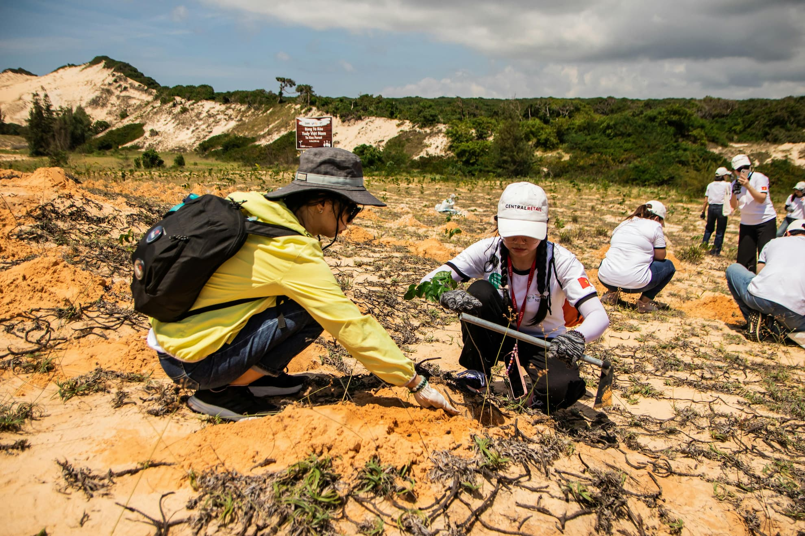

Nossa Missão, Visão e Valores
Nossa missão é restaurar ecossistemas locais através do plantio de árvores nativas, envolvendo a comunidade em cada etapa do processo.
Valorizamos a educação, a transparência e o poder da ação coletiva.
Conheça a "Raízes do Amanhã", uma organização dedicada ao reflorestamento e à educação ambiental em nossas comunidades.
Nossa missão é restaurar ecossistemas locais através do plantio de árvores nativas, envolvendo a comunidade em cada etapa do processo.
Valorizamos a educação, a transparência e o poder da ação coletiva.